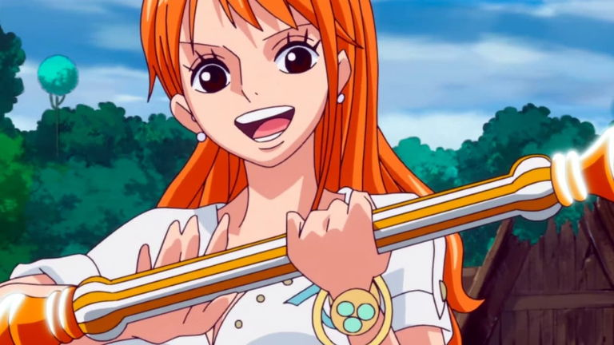

Luffy, cuyo nombre completo es Monkey D. Luffy, es el protagonista de la serie de manga y anime One Piece. Es
el capitán y fundador de los Piratas de Sombrero de Paja, un grupo de piratas famoso y poderoso. Luffy es
conocido por su sombrero de paja, su fruta del diablo Gomu Gomu, que le otorga la habilidad de estirar su
cuerpo como goma, y su objetivo de convertirse en el Rey de los Piratas y encontrar el legendario tesoro
conocido como el One Piece. Desde joven, Luffy ha sido un personaje carismático y leal, inspirado por
figuras como Shanks y Gol D. Roger, y ha enfrentado numerosos desafíos a lo largo de su aventura.
Zoro
Roronoa Zoro, conocido como "El Cazador de Piratas", es un personaje icónico de la serie "One Piece". Nacido
en el East Blue, Zoro es hijo de Tera y Roronoa Arashi, y es un espadachín de gran talento y fuerza
sobrehumana. Zoro es el primer miembro en unirse a los Piratas del Sombrero de Paja y es considerado uno de
los principales combatientes de la tripulación. Su sueño es convertirse en el mejor espadachín del mundo y
es parte del "Trío Monstruoso", que incluye a Luffy y Sanji. Zoro es conocido por su estilo de combate, que
utiliza tres espadas, y es catalogado como uno de los "Once Supernovas", reconocidos como parte de "la peor
generación". Su recompensa ha aumentado a 1.111.000.000 tras el asalto a Onigashima, siendo la segunda más
alta de la tripulación solo superada por la de Luffy.
Nami

Nami es un personaje de la serie One Piece, conocida como la navegante de los Piratas del Sombrero de Paja.
Es una pirata astuta y ambiciosa que busca crear un mapa del mundo. Nami se unió a los Piratas del Sombrero
de Paja para robar recursos y luego se rebeló contra Arlong, la banda que la había capturado. Su
personalidad es compleja, ya que inicialmente era una ladrona, pero su lealtad y determinación la llevaron a
convertirse en una heroína. Nami es conocida por su inteligencia, habilidades cartográficas y su uso del
Clima-Tact, un bastón que controla el clima. Su historia ha sido muy popular entre los fans de la serie, y
se la considera una de las personajes más icónicas de One Piece.
Usopp
Usopp es un personaje de la serie de anime y manga One Piece. Es el francotirador de los Piratas de Sombrero
de Paja y el cuarto miembro de la tripulación. Nació en Villa Syrup y es conocido por su larga nariz, que es
una referencia a su tendencia a mentir. Usopp es un personaje carismático y juguetón, que se caracteriza por
su habilidad para contar historias y su lealtad a sus compañeros. Su sueño es convertirse en un valiente
guerrero del mar, similar a su padre, Yasopp, un famoso francotirador. A lo largo de la historia, Usopp ha
demostrado ser valiente y leal, enfrentando desafíos y liberando a sus amigos de situaciones peligrosas.
One Piece es un manga japonés creado por Eiichiro Oda que se publicó por primera vez en 1997. La historia
sigue a Monkey D. Luffy y su tripulación de piratas en su búsqueda del tesoro legendario conocido como One
Piece en el vasto océano del Grand Line. Es el manga más vendido de la historia, con más de 516 millones de
copias vendidas en todo el mundo. La serie ha tenido un impacto significativo en la cultura popular y
continúa siendo muy popular en la actualidad.